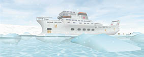
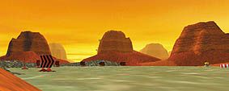
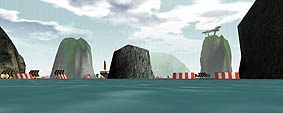
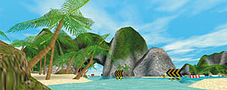
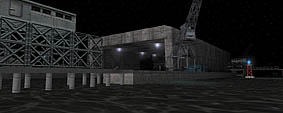
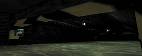
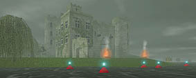
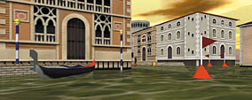

|
The 8 levels of WaterRace
OK, actually, there are 9 levels in WaterRace, but the ninth is a secret level (it's Leah's level), so you will have to figure out by yourself how it looks like!
|
|  |
Arctic
Located within the arctic polar
circle, this circuit glides
through ice fronts.
The sea is quiet, the entire site
is covered in a thick layer of
fog, giving way to the doom
light of the midnight sun.
|
|  |
Canyon
One of the most challenging
races of the championship, in
the middle of the rocky walls
of the canyon.
The numerous obstacles and
the difficult track leave no
chance of victory to the player
who loses concentration.
|
|  |
Halong
Discover the Asian circuit of
WaterRace inside the well-
known Halong Bay.
Race among its gigantic
boulders drowned in fog,
avoid the traditional Chinese
junks, the houses on pilings,
the pagodas...
|
|  |
Jamaica
Race in a paradise lagoon,
between mountainous islands
and beaches covered in palm
trees... The sky is deep blue,
the sea is quiet and still.
This place looks like heaven,
but beware, your opponents
are no tourists!
|
|  |
Naval Base
• Site description : Deep-sea navy harbor
• Weather data : Clear sky, starry night, Rough sea
• Mission : Win the race
|
|  |
New York
This is the only real indoor
race of the WaterRace
championship: it takes place
in the maze of the New York
sewers.
Race accross tunnels and
collectors but beware that the
dim light and some deficient
signals can mislead you!
|
|  |
Scotland
The decor is a Scottish lake,
whose surface is swept by an
icy wind. Have a look at the
old castle and at the stones
erected in the Paleolithic era.
This racing circuit is an ideal
place where the WaterRace
pilots can set free their speed
impulse.
|
|  |
Venice
Sun rises on still
asleep Venice. In the dawn light,
gondolas are waiting for
honey-mooners.
The circuit goes through the
canals of the well known
city, through the harbor, and
through unusual plazas and
popular districts.
|